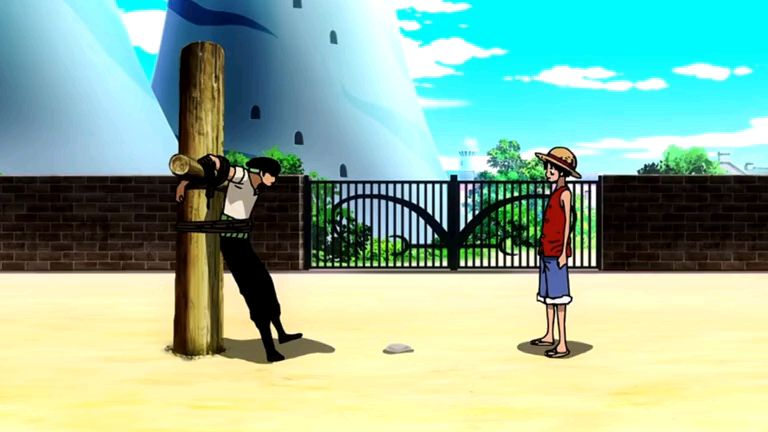
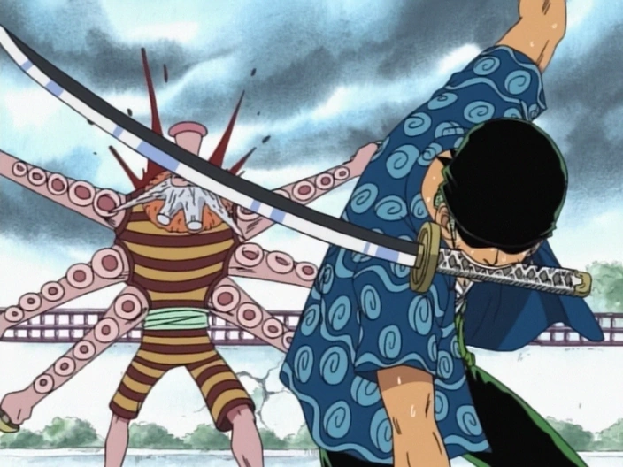

About
Zoro was born 21 years ago in the East Blue to Tera and Roronoa Arashi, a descendant of the Shimotsuki Family.By the time he was 8 years old, his father Arashi had already been killed in a battle against pirates threatening the Village, and his mother Tera died of illness, leaving Zoro orphaned at a dojo in Shimotsuki Village, where he trained to be a swordsman.
Start of journey
Zoro learned of Dracule "Hawk-Eye" Mihawk, who currently holds the title of the greatest swordsman in the world. He set off to sea, searching for him in order to challenge him to a duel. However, he lost his way and could not find his way back home. In order to survive on his own, he took on bounties to pay for living expenses. He quickly built a famous reputation for himself as a "Pirate Hunter" in the East Blue[26] and even the Grand Line as Baroque Works had heard him. He was even considered the greatest swordsman of East Blue. During that time, he met two bounty hunters, Johnny and Yosaku.
Romance Dawn Arc
On the ninth day of Zoro's restraint, Koby and Monkey D. Luffy arrived in town with the intentions of Koby joining the Marines and Luffy inviting Zoro to be his first crewmember. They eventually arrived where Zoro was being held, in time to witness Rika trying to feed him some onigiri which Zoro refused, most likely to avoid the girl being caught as there was a sign forbidding anyone to aid Zoro. The food ended up being stomped badly by Helmeppo because it was sweet while onigiri is supposed to be salty. After they left, Luffy asked Zoro to join him but he flatly refused to become a pirate. He then asked Luffy to feed him the dirtied onigiri as well as telling Rika that the food was delicious, revealing his kindness. Later in town, Rika explained to Luffy and Koby the reason for Zoro's capture, which only reinforced Luffy's decision to have him as his crewman. When Helmeppo stated that he would execute Zoro in three days time, Luffy angrily punched him for breaking his promise, which sent Helmeppo scurrying to his father, seeking revenge.
Feedback Evaluation Form
Please give us your feedback on our content for this page; we appreciate your feedback and support.